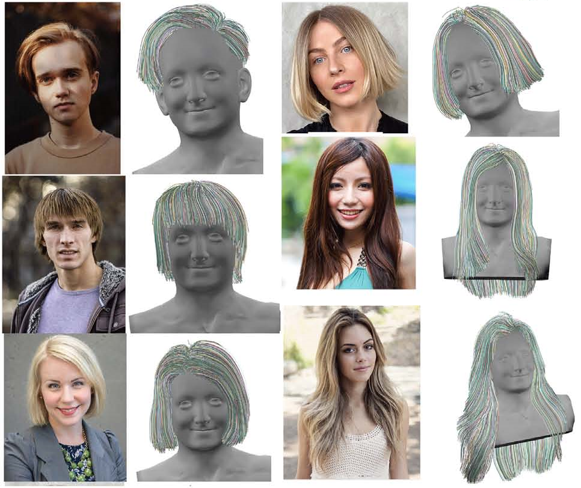
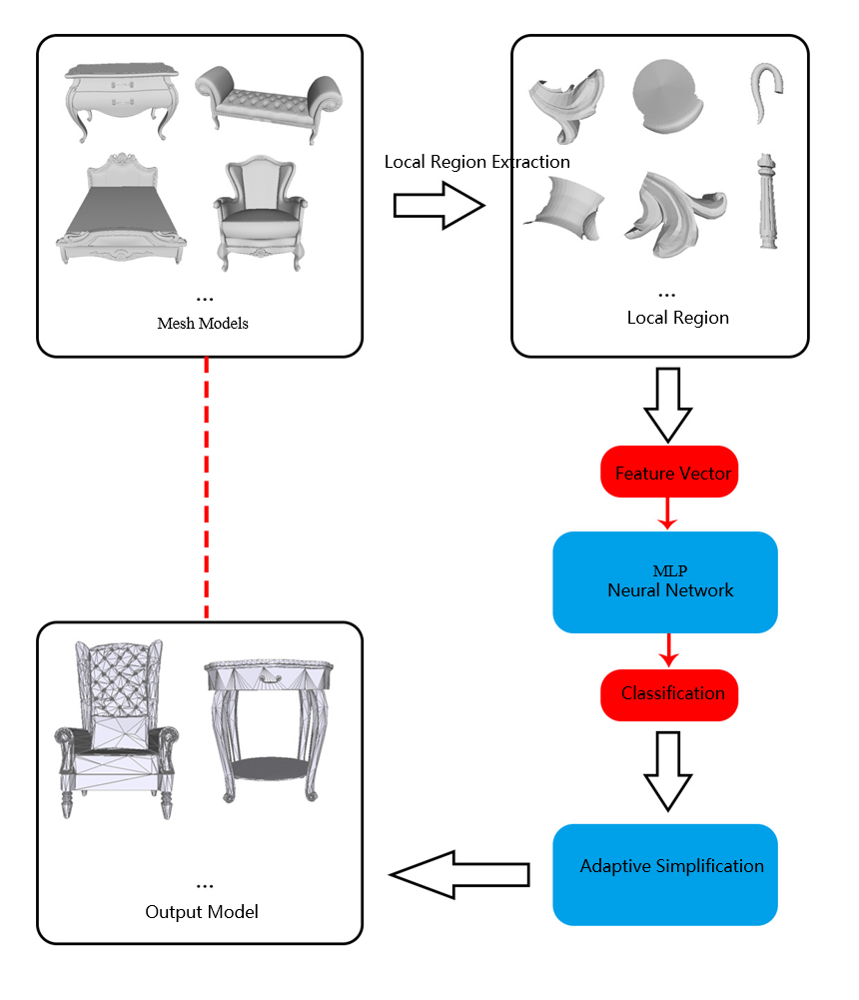

Chuhua Xian
Associate ProfessorSelected Papers Since 2018
Efficient Cloth Simulation based on the Material Point Method
Aoran Lv, Yuanpeng Zhu, and Chuhua Xian*
Computer Animation & Vitual Worlds, 2022, conditionally accepted
Computer Animation & Vitual Worlds, 2022, conditionally accepted
Automated Ornaments Layout Method for Indoor Scene based on Design History Knowledge
Bolun Zheng, Chuhua Xian*, Guiqing Li, and Yu Yang
Journal of Computer-Aided Design & Computer Graphics, 2022, 34(2): pp. 283-293.
Journal of Computer-Aided Design & Computer Graphics, 2022, 34(2): pp. 283-293.
Dynamic Data Reshaping for 3D Mesh Animation Compression
Guoliang Luo, Xin Zhao, Qiang Chen, Zhiliang Zhu Chuhua Xian
Multimedia Tools and Applications, 2022, 81(1): 55-72.
Multimedia Tools and Applications, 2022, 81(1): 55-72.
Reversible transformation of tetrahedral mesh models for data protection and information hiding
Hao-Tian Wu, Tao Zhou, Zhenwei Zhuang, Chuhua Xian
Journal of Information Security and Applications, 2022, 66: pp.103161-103171.
Journal of Information Security and Applications, 2022, 66: pp.103161-103171.
Surface Attributes Driven Volume Segmentation for 3D-Printing
Xin Liu, Chuhua Xian*, Shuo Jin, and Guiqing Li
Computers & Graphics, November 2021, 100: pp.43-53.
Computers & Graphics, November 2021, 100: pp.43-53.
3D Shape-adapted Garment Generation with Sketches
Yijing Chen, Chuhua Xian*, Shuo Jin, and Guiqing Li
Computer Graphics International, September 6-10, 2021, Genever, Switzerland.
Computer Graphics International, September 6-10, 2021, Genever, Switzerland.
Multi-scale Fusion Network with RGB Image Features for Depth Map Completion
Bolun Zheng, Chuhua Xian*, and Dongjiu Zhang
Journal of Computer-Aided Design & Computer Graphics, 2021, 33(9): 1407-1417.
Journal of Computer-Aided Design & Computer Graphics, 2021, 33(9): 1407-1417.

Camera Focal Length from Distances in A Single Image
Yunhui Xiong, Zuxuan Lin, Guiqing Li, Chuhua Xian, and Changxin Peng
The Visual Computer, July 2021.
The Visual Computer, July 2021.
Fast Generation of High Fidelity RGB-D Images by Deep-learning with Adaptive Convolution
Chuhua Xian, Dongjiu Zhang, Chengkai Dai, and Charlie C.L. Wang
IEEE Transactions on Automation Science and Engineering, July 2021, 18(3): pp.1328-1340.
IEEE Transactions on Automation Science and Engineering, July 2021, 18(3): pp.1328-1340.
Extracting POP: Pairwise orthogonal planes from point cloud using RANSAC
You Wu, Guiqing, Li, Chuhua Xian, Xiaofeng Ding, and YunhuiXiong
Computers & Graphics, February 2021, 94: pp.43-51.
Computers & Graphics, February 2021, 94: pp.43-51.
Multi-Scale Progressive Fusion Learning for Depth Map Super-Resolution
Chuhua Xian, Kun Qian, Zitian Zhang, and Charlie C.L. Wang
Preprinted in arXiv, 2020.
Preprinted in arXiv, 2020.
3D Hand Mesh Reconstruction from a Monocular RGB Image
Hao Peng, Chuhua Xian*, and Yunbo Zhang
The Visual Computer, 2020, volume 36: pages 2227–2239.
The Visual Computer, 2020, volume 36: pages 2227–2239.

HAO-CNN: Filament-aware hair reconstruction based on volumetric vector fields
Zehao Ye, Guiqing Li, Biyuan Yao, and Chuhua Xian
Computer Animation & Vitual World, 2020, volume 31.
Computer Animation & Vitual World, 2020, volume 31.

Mesh Simplification with Adaptive Simplified Ratio Based on Local Region Features
Yu Yang, Chuhua Xian*, and Guiqing Li
Journal of Computer-Aided Design & Computer Graphics, 2020, 32(6): pages 857-864.
Journal of Computer-Aided Design & Computer Graphics, 2020, 32(6): pages 857-864.

Efficient 3D animation shape manipulation with region smoothness preservation
Yu Yang, Chuhua Xian*, Junxian Huang, and Guiqing Li
Journal of Image and Graphics, 2020, 25(5): pages 1019-1031.
Journal of Image and Graphics, 2020, 25(5): pages 1019-1031.
Progressive Furniture Model Decimation with Texture Preservation
Zhiguang Pan, Chuhua Xian*, Shuo Jin, and Guiqing Li
Journal of Computer Science and Technology, 2019, 34(6): pages 1258-1268.
Journal of Computer Science and Technology, 2019, 34(6): pages 1258-1268.
Data-driven 3D human head reconstruction
Huayun He, Guiqing Li, Zehao Ye, Chuhua Xian, and Yongwei Nie
Computers & Graphics, 2019, volume 80: pages 85-96.
Computers & Graphics, 2019, volume 80: pages 85-96.
Efficient C2-weighting for Image Warping
Chuhua Xian, Shuo Jin, and Charlie C.L. Wang
IEEE Computer Graphics and Applications, 2018, 38(1): pages 59-76.
IEEE Computer Graphics and Applications, 2018, 38(1): pages 59-76.
An Image Representation for the 3D Face Synthesis
Guoliang Luo, Wei Zeng, Wenqiang Xie, Hao-Peng Lei, and Chuhua Xian
Proceedings of the 31st International Conference on Computer Animation and Social Agents, May 2018, Beijing, China.
Proceedings of the 31st International Conference on Computer Animation and Social Agents, May 2018, Beijing, China.
Papers before 2018
Under construction...